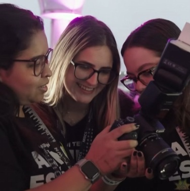

Alunos em AçãoAprendizagem em ambiente real
Neste vídeo, a Estácio evidencia uma estratégia de Brand Experience baseada na vivência prática, ao posicionar seus alunos dentro do ecossistema do festival e conectá-los diretamente à dinâmica profissional do audiovisual. A marca deixa de apenas falar sobre mercado e passa a materializar essa promessa em uma experiência concreta, aspiracional e compartilhável, fortalecendo sua imagem como ponte entre formação acadêmica e atuação real.